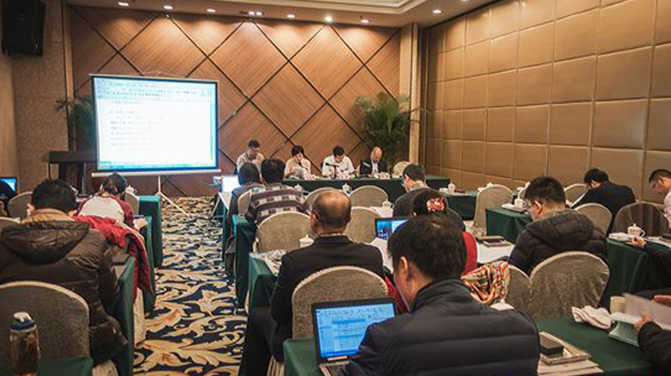
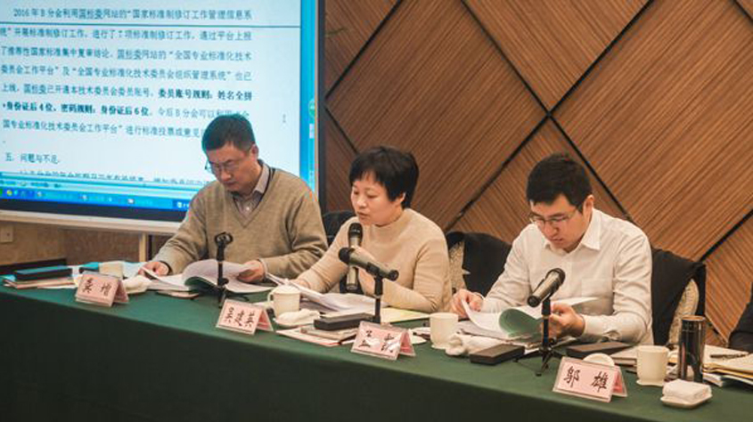

全国电磁兼容标准化技术委员会高频现象分技术委员会(以下简称B分会)二届二次会议于2016年12月15日至17日在南京市召开。来自企事业单位、科研院所的41名会议代表参加了会议。上海市质量技术监督局标准化处副处长孟凯、全国电磁兼容标准化技术委员会秘书长邬雄出席了会议。

B分会主任委员吴建英对2016年标委会工作作了总结报告，分别从标准化工作、技术交流、B分会归口TC77/SCB标准的转化、标委会自身建设工作等方面进行总结。同时提出并通过了B分会下一步工作计划。
秘书长龚增汇报了2016年B分会财务报告。委员姚利军介绍了参加IEC/SC77B/CISPR/A联合TEM工作组工作情况。特邀代表原青云博士介绍了针对IEC 61000-4-2存在问题开展的工作，并提出了相关修改建议。会议审议通过了北京交通大学的闻映红教授和军械工程学院的原青云博士的委员申报申请，并将推荐他们作为中国专家参加IEC/TC77B MT12工作组工作。

随后，会议审查并通过了国家标准GB/T 17626.10—201X《电磁兼容 试验和测量技术阻尼振荡磁场抗扰度试验》(送审稿)、GB/T 17626.6—201X《电磁兼容 试验和测量技术 射频场感应的传导骚扰抗扰度》(送审稿)、GB/Z 30556.1—201X《电磁兼容 安装和减缓导则 一般要求》(送审稿)、GB/Z 30556.2—201X《电磁兼容 安装和减缓导则 接地和布线》(送审稿)，这些国家标准的制定和实施将进一步完善我国EMC基础标准体系，对电磁兼容试验方法的应用提供技术支持。